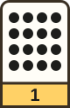
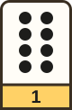
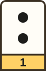

Session 1: Dot cards, no laptops
An unplugged binary lesson for P4. Pupils count with 5 dot cards and link them to place value.
- Who24 P4 pupils. 6 groups of 4, in pairs for card work.
- Time90 minutes, with a 5-minute break.
- RoomOur club classroom. Desks in 6 islands.
- DevicesNone.
Learning goal
By the end, pupils can show any number from 0 to 31 with dot cards. They can say why each card is double the one on its right.
Success criteria, in pupil words
- I can make a number my partner calls out, starting from the biggest card.
- I can read cards that are up and say the number.
- I can say how dot cards are like tens and ones, and how they differ.
Materials
- 1 big set of 5 dot cards, printed on A4 card, for the front.
- 12 small sets of 5 cards, one per pair, each in a zip bag. Print them below.
- 24 copies of the count-to-31 record sheet, also below.
- 24 exit ticket slips with the 2 check questions.
- Whiteboard and markers.
- I cut the cards before club. Pupils do not use scissors today.
The plan, minute by minute
- 0 to 5 minArrive, attendance, water bottles. Bags under the desks. I tell them: "No laptops today. Next week you build this in Scratch."
- 5 to 15 minStarter. Five volunteers stand at the front, each holding one big card face down. I turn over the 1, 2, 4 and 8 cards in order. The class guesses the next card. Then: what comes after 16? (32, then 64.) Ask: "What is the rule?" Each card is double the last.
- 15 to 30 minMake a number. I show 9 with the big cards, starting from the biggest. I say the algorithm out loud: "Does 16 fit in 9? No, keep it down. Does 8 fit? Yes, flip it up. 1 left. Does 4 fit?" I write it as 3 steps on the board. Pairs then make 20, 15 and 8 with their small cards. Partners check each other.
- 30 to 45 minCount from 0 to 31. Each pair flips their cards to count up, one number at a time. One partner flips, one fills in the record sheet. Ask: "Which card flips every time? Which flips every second time?"
- 45 to 50 minBreak. Cards stay on the desks, face down.
- 50 to 65 minPlace value. On the board, I write 13 in a tens and ones chart. Then 13 in dot cards: 01101. Ask: "In our numbers, each place is how many times the next?" (10.) "On the cards?" (2.) Then: "Look at your sheet. What is true of every odd number?" The 1 card is up. I tell them what a bit really is: anything with two states. In a computer, it is a high or low voltage.
- 65 to 80 minNumber of the day. Pairs show today's date, their age and the number of pupils in the club. Then a speed round. I call a number, and pairs race to hold it up in cards. Fast pairs get a sixth card to work out on paper.
- 80 to 87 minExit ticket. Each pupil answers the 2 check questions alone on a slip.
- 87 to 90 minPack up. Cards back in the bag in order: 16, 8, 4, 2, 1.
Check: 5 + 10 + 15 + 15 + 5 + 15 + 15 + 7 + 3 = 90 minutes.
Check questions
- The 8, 2 and 1 cards are up. What number is that? (11.)
- Show 19. Which cards are up? (16, 2 and 1. In binary, 10011.)
I read the slips that evening. A wrong answer to question 1 tells me about reading cards. A wrong answer to question 2 tells me about the algorithm. See three sample tickets.
For every pupil
- Pupils who struggle: start with 4 cards, 8, 4, 2 and 1. Numbers stop at 15. Their partner reads the algorithm out loud from the board.
- Pupils who race ahead: what is the next card? How high can 6 cards go? (63.) What about 8 cards? (255.)
- Pupils who find reading hard: the record sheet has a dot picture above each column.
- Pupils who won't speak up: the speed round is in pairs, so nobody answers alone.
- Noise: 12 pairs racing gets loud. I tell the class next door first.
Print the cards and the record sheet
Dot cards: 16, 8, 4, 2, 1



Backs


Glue each back to its card. The strip shows 1 when the dots are up and 0 when they are down.
Count to 31: record sheet
Write 1 if the card is up, 0 if it is down. The first rows are done for you.
| Number | 16 | 8 | 4 | 2 | 1 |
|---|---|---|---|---|---|
| 0 | 0 | 0 | 0 | 0 | 0 |
| 1 | 0 | 0 | 0 | 0 | 1 |
| 2 | 0 | 0 | 0 | 1 | 0 |
| 3 | |||||
| 4 | |||||
| 5 | |||||
| 6 to 31 | Carry on, one row for each number. | ||||
What pattern do you see in the 1 column? In the 2 column?
Source
- The starter, the big-to-small algorithm and the numbers 9, 20, 15 and 8 follow CS Unplugged, How binary digits work, a 45-minute lesson for ages 8 to 10. I stretched it to 90 minutes and added the place value part.
- Place value and number patterns in P4, and odd and even numbers in P2: MOE Mathematics Syllabus, Primary One to Six.